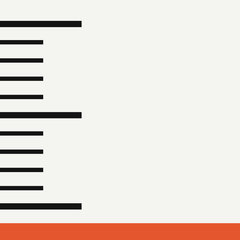

Y³ StudioEdge Ruler
아이폰 끝이 0인 축척 자. 기기 끝을 벽이나 문틀, 도면의 선에 대고 바로 읽고, 기울기를 각도·분수(1/N)·퍼센트로 함께 확인합니다.
자주 묻는 질문
처음에 꼭 보정해야 하나요?
네. 기종과 케이스마다 화면에서 기기 끝까지의 거리가 달라, 정확하게 쓰려면 한 번 보정이 필요합니다. 옵션 › 보정에서 실물 자의 0을 아이폰(케이스) 끝에 맞춘 뒤 10 mm 표시는 오프셋으로, 100 mm 표시는 배율로 맞춥니다. 자가 없으면 카드로 보정하기에서 신용카드처럼 표준 크기 카드로 맞출 수 있습니다. 케이스를 바꾸면 프로필을 하나 더 만들어 두세요.
끝 근처 눈금이 화면 모서리에 가려요
아이폰 화면 모서리가 둥글어서 생기는 현상입니다. 눈금이 가려져도 측정선 위치의 값은 화면 가운데에 크게 표시되며 정확합니다.
축척 값은 어떻게 읽나요?
1:1은 mm, 1:100~1:950 축척은 m 단위 숫자입니다. 예를 들어 1:100에서 1.23은 실제 1.23 m입니다. ft·in을 고르면 미국 건축 축척(1/16″ = 1′ 등)을 쓸 수 있습니다.
기울기가 멈춰요
값이 1초 동안 거의 변하지 않으면 그 평균값으로 고정되고 선이 검게 바뀝니다. 기기를 움직이거나 기울기 숫자를 누르면 다시 따라갑니다. 정확도를 높이려면 보정 화면의 기울기 영점을 평평한 바닥에서 한 번 맞춰 두세요.
잠금 화면에서 바로 열기
iOS 18 이상에서는 잠금 화면 하단 버튼이나 제어 센터에 Edge Ruler를 넣을 수 있습니다. 잠금 화면을 길게 눌러 사용자화에서 추가하세요.
무료 체험과 구매
설치 후 14일 동안 모든 기능을 쓸 수 있습니다. 체험이 끝나도 1:1 자와 보정은 계속 무료이며, 축척과 기울기는 한 번 구매로 계속 쓸 수 있습니다. 구독이 아닙니다.
문의
y3_studio@naver.com · 개인정보처리방침
English
Edge Ruler is a scale ruler that starts at the end of your iPhone, with slope in degrees, ratio and percent.
Calibrate first
Phones and cases differ, so calibrate once under Options › Calibrate with a real ruler, or with any standard-size card using Calibrate with a card.
Ticks near the end are hidden
The screen's rounded corners can hide the first few ticks; the reading shown in the middle is still exact.
Reading scales
1:1 reads in mm; 1:100–1:950 read in meters (1.23 = 1.23 m). Choose ft·in for architectural scales such as 1/16″ = 1′.
Slope holds still
When the value stays steady for a second it locks to the average and the line turns black. Move the phone or tap the numbers to release. Set Slope zero on a level surface for best accuracy.
Trial and purchase
All features are free for 14 days. Afterwards the 1:1 ruler and calibration stay free; scales and slope are a one-time purchase, not a subscription.
Contact: y3_studio@naver.com · Privacy Policy